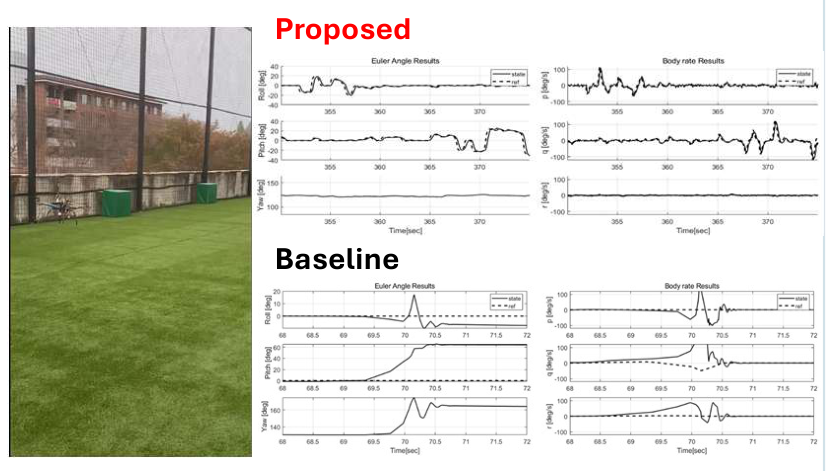
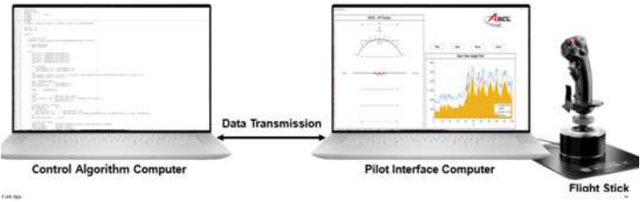
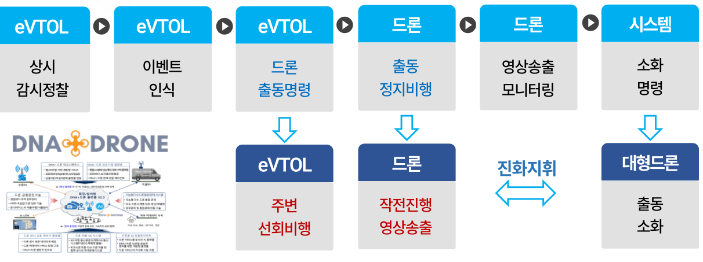
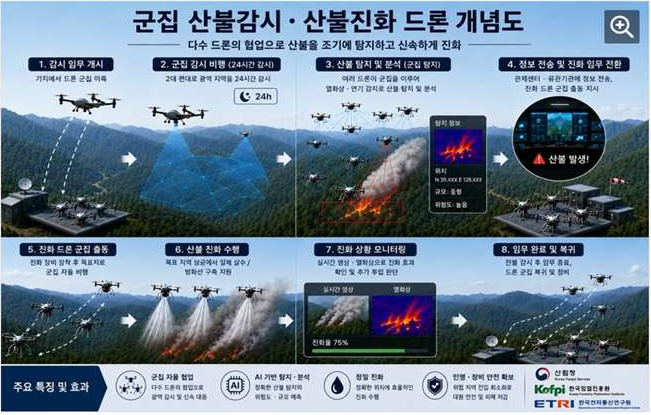
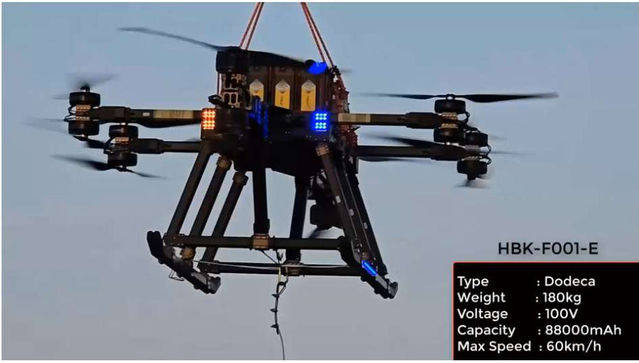
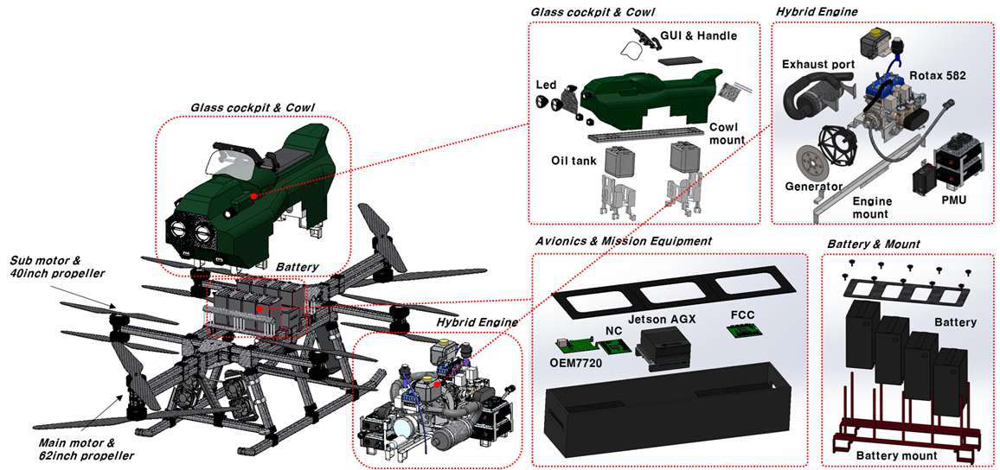

KAIST · 비선형 비행제어와 온라인 추정·최적유도
자체 연구기법을 제안하고 실시간·실비행으로 검증
틸트로터의 공력 변화에 대응하는 RBF-NN 적응제어·온보드 HILS와 멀티로터의 구동 지연 보상기법을 연구했습니다. MTS-MPPI를 통해 다중 경로 탐색을, PIPE를 통해 미지 파라미터의 온라인 추정을 제안했습니다. PIPE–MPPI의 조종사 특성 추정·적응적 지형추종은 조종사 참여 HILS로 검증했습니다.
RESEARCH CAPABILITY · 연구목표와 산학협력 추진역량
불확실한 기체와 환경에서도 신뢰할 수 있는 비행을 구현하는 연구
저는 모델과 실제 비행 사이의 차이를 분석하고, 그 해결책을 실제 항공시스템에 구현하는 연구를 수행해 왔습니다. 비행체 동역학·제어에서 온라인 추정·최적유도와 온보드 지능으로 확장한 경험을 바탕으로, 항공대에 불확실성의 이해–안전한 계획·제어–통합·검증을 연결하는 연구기반을 구축하겠습니다.
틸트로터의 공력 변화에 대응하는 RBF-NN 적응제어·온보드 HILS와 멀티로터의 구동 지연 보상기법을 연구했습니다. MTS-MPPI를 통해 다중 경로 탐색을, PIPE를 통해 미지 파라미터의 온라인 추정을 제안했습니다. PIPE–MPPI의 조종사 특성 추정·적응적 지형추종은 조종사 참여 HILS로 검증했습니다.
고신뢰성 다목적 Hoverbike의 Project POC로 연구실·참여기업 간 기술 조율, 비행제어기 설계·구현과 항전 통합·시험을 담당했습니다. 하이브리드 추진, 다중화 비행컴퓨터와 센서를 연결하며 전원·통신·연산·추진계의 상호작용을 다룬 경험을 축적했습니다.
산불 대응 무인기의 실시간 온보드 인지, 영상·메타데이터 연동과 지형 기반 자동착륙 유도를 연구하고 있습니다. 산림청 관련 수행·기획 및 항공 AI 기술위원 경험을 활용하여 현장 요구를 연구문제로 구체화하고, 제어·자율비행 기술을 공동개발과 학생 연구로 발전시키겠습니다.


온라인 추정 · 적응적 유도 · 조종사 응답
그림 1. 본인 면접발표자료 PDF 6·14쪽의 검증 장면·구성을 발췌. 향후 기체 불확실성 정량화·안전계층 통합과 구분한 기존 연구성과입니다.
CORE RESEARCH · 산학연 공동개발의 핵심기술
세 가지 중점 연구를 공통 항공시스템과 실환경 데이터로 연결합니다.
기존 PIPE를 기체·공력 특성 추정으로 확장하고 추정값과 함께 불확실성을 정량화하여 강건·적응제어와 MPPI에 반영하겠습니다. 틸트로터 천이비행의 공력·추진 변화와 다른 탑재조건을 대상으로, 추정의 신뢰도까지 고려하는 비행명령 생성을 연구합니다. 공통 제어구조와 기체별 모델·제어할당을 구분하여 다기종 적용성을 평가하겠습니다.
MTS-MPPI·지형 기반 유도 연구를 바탕으로 Vision·Depth의 안전 관련 환경표현을 Flow Matching/TAFM 유도정책에 연결하고, HJ 도달가능성 기반 안전계층으로 후보 행동을 평가·보정하겠습니다. 기체 동역학·입력 한계와 인지오차·정보지연 범위를 명시하여 안전 제약의 만족과 적용 한계를 검증하고 관측·복귀·착륙으로 확장합니다.
공통 비행제어 SW와 센서·항법·임무컴퓨터 인터페이스를 갖춘 모듈형 UAV/eVTOL 연구플랫폼을 구축하겠습니다. 동일 SW·항전구조로 시뮬레이션–온보드 HILS–실비행을 연결하고, 기체 규모·형상·탑재·환경 차이에 필요한 추정·적응·추가 검증방법을 연구합니다. 실기체에서 발견한 모델 차이와 구현 제약을 앞의 두 연구에 반영하겠습니다.
중장기 확장 기체·환경·임무데이터로 후보 행동의 미래 비행·관측 결과를 예측하는 임무 특화 World Model을 연구하고, 기체 간 전이와 정보수집 경로계획에 활용하겠습니다.
COLLABORATION 01ETRI 전략 공동연구
ETRI·항공대·기체 및 항전 기업의 역할을 연결하는 공동연구를 제안합니다.
ETRI에서 온보드 인지·자율비행을 연구하며 군집비행·공간정보 후속 전략과제를 함께 논의하고 있습니다. 기체 제어·자율비행 수요에 대응해 항공대의 추정·유도·제어와 실기체 검증 과업을 기획 단계부터 제안하겠습니다.
공유 지도·관측목표
정보 갱신·임무 배분
협력운용 시나리오
① 기체·환경 변화 추정·강건적응제어
② 관측 품질·안전 제약 기반 경로계획
③ 온보드 구현·실기체 통합검증
기체·임무시스템 적용
디지털 트윈·시뮬레이터
인터페이스·시험조건
600억 원은 기관 전체의 연간 전략사업 직접비 규모로, 단일 전략과제 예산이나 항공대 수주액이 아닙니다. 규모·일정은 현재 기획 논의 기준이며, 부서 기획안의 선정 후 과제예산과 대학 참여범위를 협의합니다.
기체 동역학·탑재조건·구동 응답·외란을 추정하고 강건·적응제어 및 불확실성 반영 MPPI로 비행 성능을 유지합니다.
공유 지도와 관측목표를 실행 가능한 경로로 변환하고, 도착시간·관측 가능성·안전한 대안을 상위 임무계획에 제공합니다.
온보드 SW와 정보·네트워크 인터페이스를 연동하고, 관측 품질·정보지연·비행 성능을 같은 시나리오에서 공동평가합니다.
세부 목표·인터페이스·산출물과 학생 인력·장비·시험비를 포함한 제안서 구성
사업 수행체계에 맞는 공동·위탁연구 형태와 항공대 배정 연구비 협의
기체 탑재 SW·논문·학위연구를 축적하고 기업 적용·후속 전략연구 확대
확장 연구 기체·환경·임무데이터의 World Model을 기체 간 전이·공간정보 수집으로 발전시킵니다.
기관 방향 참고: ETRI 국가임무 중심 R&D·전략연구기획단 공개자료(2026.10). 부서 기획은 본인의 참여 논의 기준입니다.
COLLABORATION 02산림청 수요 기반 R&D
스테이션 활용과 헬기 진화 지원을 병행 준비하고, 환경 적응 제어로 연결합니다.
임무 요구·운용조건·평가 시나리오
온보드 AI·영상 및 데이터 연동
기체·탑재장비·제품 요구·시험


정차한 스테이션과 대표 드론 1종에서 관측 경로계획, 기체 연동과 안전복귀·착륙을 고도화합니다. 기존 기능·개선 수요를 확인하고 개발 항목을 합의합니다.
관측 위치·갱신 시점과 정보 오차·지연을 반영한 임무유도를 연구합니다. PIPE–MPPI 조종사 모델·HILS 경험을 활용해 조종사 참여 모의검증부터 시작합니다.
기체·탑재조건, 외란과 관측·통신 변화를 반영해 미검증 조건의 성능 회복·전이 한계를 평가합니다. 현장 데이터를 추정·제어 연구로 발전시키고, 운용범위 이탈 시 복귀·임무변경을 판단합니다.
과제·연구비 확보. 헬기 진화 지원·차량형 스테이션·규제샌드박스 기획 경험을 활용해 신규·후속 과제를 제안합니다. 항공대의 알고리즘·탑재·검증 과업에 학생 인건비와 장비·개조·시험비를 편성하겠습니다.
유무인 운용은 기관이 정한 시간·공간 분리를 전제로 합니다. 실제 동시비행·헬기 탑재는 별도 협의·안전성 검토 후 추진합니다.
정책 근거: 산림청 「역대급 R&D 투자 확대」(2026.01.16)의 2027년 헬기 진화 효율 개선 투자 방향. 특정 신규과제 선정·참여·예산을 의미하지 않습니다.
COLLABORATION 03항공 AI · ADD 후속 연구
기술기획 경험과 대형 시스템 수행역량을 각각의 과제 확보 경로로 활용합니다.
우주항공청의 미래항공기 개발·제조 AI 안전성·신뢰성 탐색연구에서 기술분과위원회 설계분과 위원으로 기술수요 검토·과제카드 작성을 수행했습니다. 이를 바탕으로 개발단계별 검증 요구를 반영한 공동제안을 구성하겠습니다.
항공대는 PIPE 기반 추정·생성형 유도·안전계층을 연결하고 성능·안전성·적용 한계를 평가합니다. 기업·연구기관과 탑재 요구·검증 시나리오를 구성하여 관련 공모에 알고리즘·평가기술 과업을 제안하겠습니다.
분야 근거: 한국항공우주학회 기술수요조사(2026.01.05). 기술위원 활동은 연구기획 역량의 근거이며 특정 사업의 선정·수주를 보장하지 않습니다.
2019–2024년 KAIST의 ADD 지원 Hoverbike 개발에서 Project POC로 연구실·참여기업 간 기술 조율과 비행제어·항전 통합·시험을 담당했습니다. 대형 기체·하이브리드 추진·다중화 항전 경험을 후속 공동개발에 활용하겠습니다.


그림 5. 본인 면접발표자료 PDF 8쪽의 시제기 사진·SolidWorks 구성도 원본 · 기존 개발·시험 경험
대형 UAM급 무인기의 강건·적응 비행제어, 하이브리드 추진부하를 고려한 비행·에너지 관리, 다중화 항전·추진계의 통합·안전성 검증을 제안합니다. 기존 연구진·기업과 수요를 확인해 모델링·제어·시험 공동연구로 발전시키겠습니다.
참여·예산·데이터 공개·지식재산·학생 참여조건은 과제별로 협의합니다. ADD 후속 연구는 미확정 신규 제안입니다.